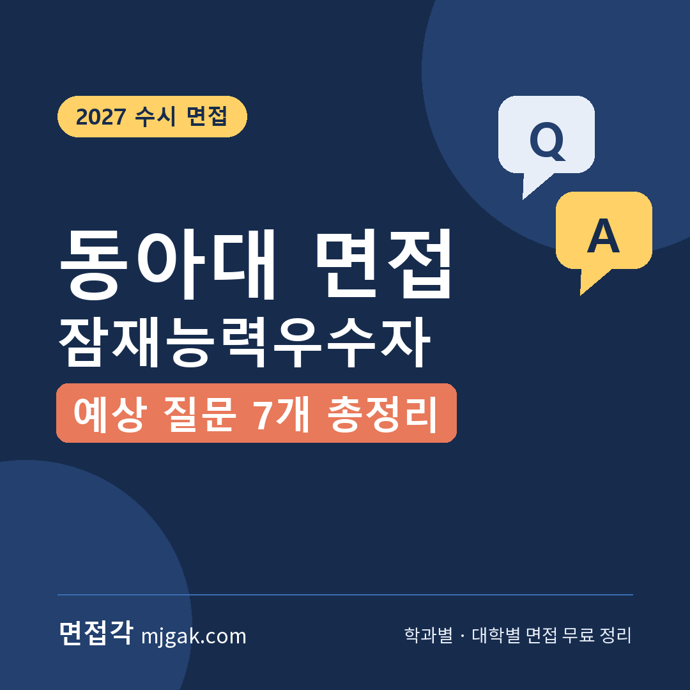
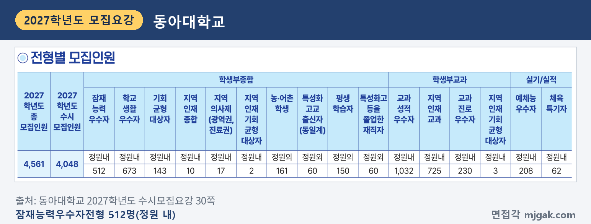
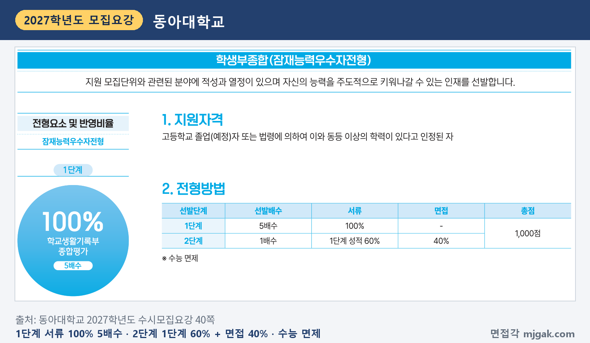
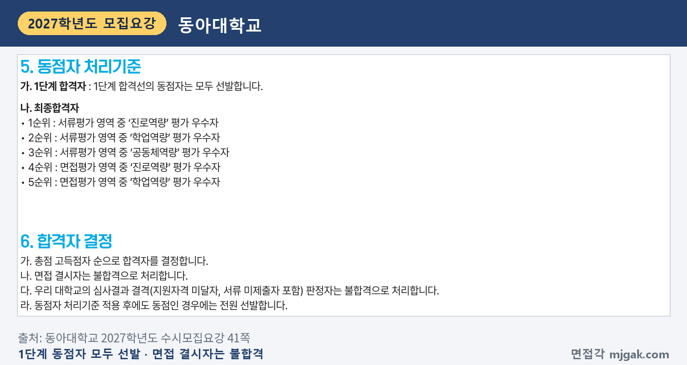
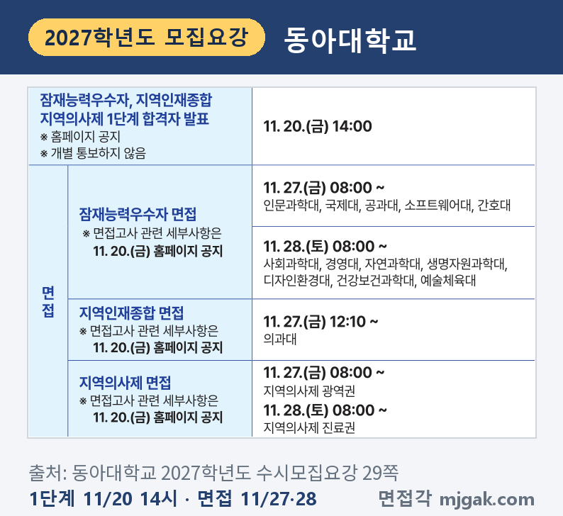
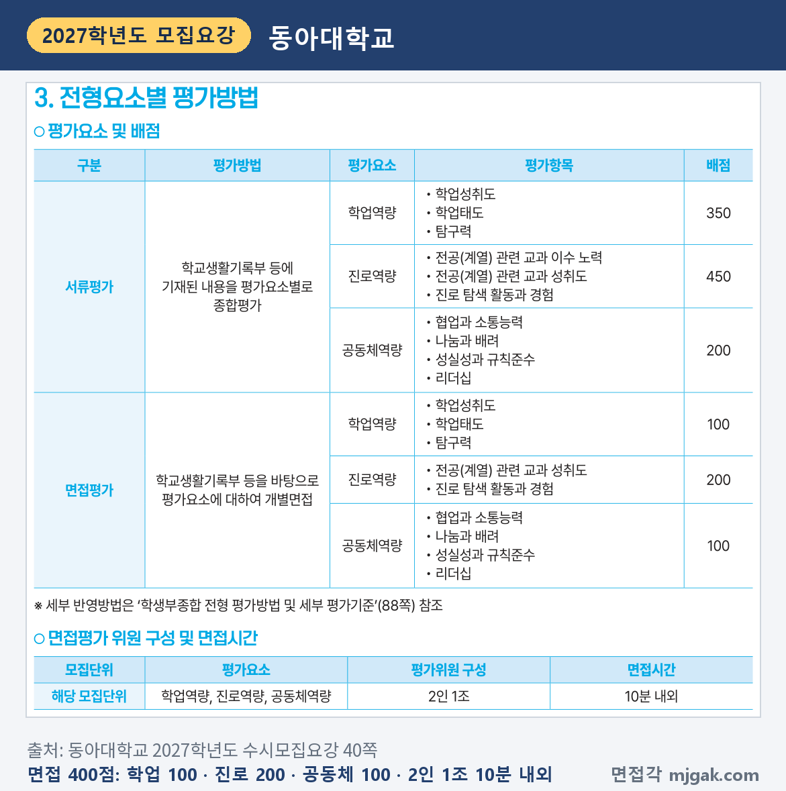
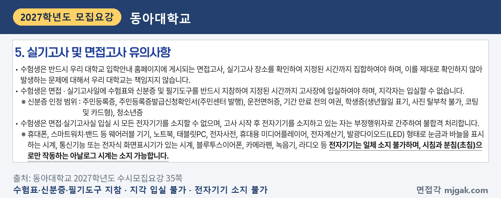
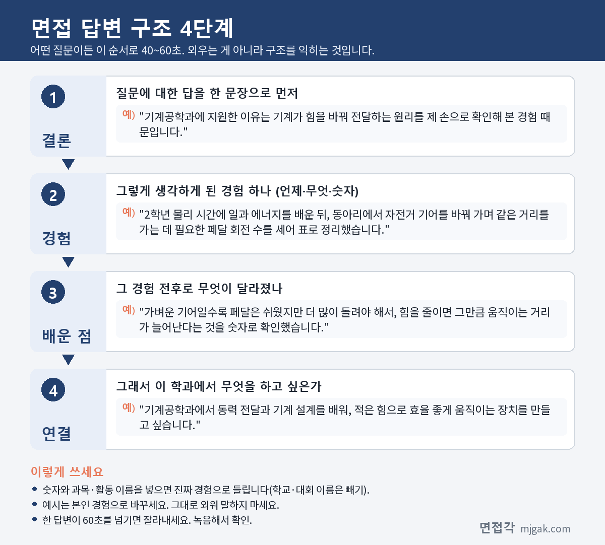
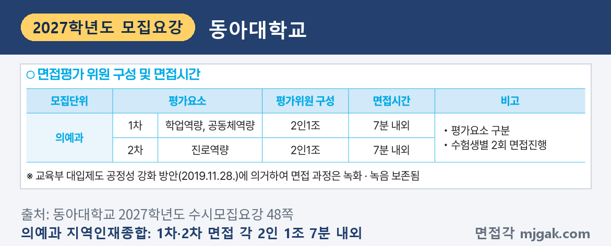

Ctrl+V (서식 유지됨)제목
본문 (이 영역 전체가 복사됩니다)
📷 여기에 이미지 넣기 — 썸네일 — thumb-dau.png (대표 이미지로 지정)
동아대 잠재능력우수자전형에서 일정상 먼저 챙길 것은 1단계 발표가 수능 다음 날이라는 점입니다. 수능은 11월 19일(목)이고, 1단계 합격자 발표는 11월 20일(금) 오후 2시입니다. 면접은 단과대학에 따라 11월 27일(금) 또는 11월 28일(토)입니다. 2027학년도부터 1단계 배수가 4배수에서 5배수로 늘었고, 2단계는 1단계 성적 60%와 면접 40%를 합산합니다. 면접은 평가위원 2인 1조가 학교생활기록부 등을 바탕으로 10분 내외로 보는 개별면접이고, 면접 400점 가운데 진로역량이 200점입니다. 이 글은 2027학년도 수시모집요강으로 전형 방법, 일정, 면접 방식, 예상 질문 7개, 준비 순서를 정리하고 의예과 지역인재종합·지역의사제는 따로 묶었습니다. 잠재능력우수자전형에 지원한 고3과 재수생이 읽으시면 됩니다.
1. 잠재능력우수자전형, 2027학년도에는 어떻게 보나
잠재능력우수자전형은 학생부종합전형으로 512명을 뽑습니다(30쪽). 모집요강이 밝힌 인재상은 "지원 모집단위와 관련된 분야에 적성과 열정이 있으며 자신의 능력을 주도적으로 키워나갈 수 있는 인재"입니다(40쪽). 인원이 많은 곳은 경영학과 30명, 기계공학과 23명, 관광경영학과·국제무역학과·경영정보학과 각 15명, 전자공학과·체육학과 각 14명입니다. 간호학과는 5명이고, 의예과는 이 전형으로 뽑지 않습니다(30~32쪽). 고등학교 졸업(예정)자와 법령에 따라 같은 수준 이상의 학력을 인정받은 사람이 지원할 수 있고(40쪽), 검정고시 출신과 외국고 출신도 지원할 수 있습니다(28쪽).
📷 여기에 이미지 넣기 — 캡처 1 — 동아대학교 2027학년도 수시모집요강 30쪽: dau-2027-units.png
전형 방법은 1단계에서 학교생활기록부 종합평가 100%로 5배수를 뽑고, 2단계에서 1단계 성적 60%와 면접 40%를 합산합니다. 총점은 1,000점이고 수능은 면제입니다(40쪽). 1단계 배수는 2026학년도 4배수에서 5배수로 바뀌었습니다(26쪽). 점수 범위는 1단계 성적이 600~360점, 면접이 400~240점입니다(28쪽). 모집인원에 5를 곱하면 경영학과(30명)는 150명, 기계공학과(23명)는 115명이 1단계 합격 규모입니다(이 글에서 계산한 값). 1단계 합격선의 동점자는 모두 선발하므로(41쪽) 실제 인원은 이보다 많을 수 있습니다.
📷 여기에 이미지 넣기 — 캡처 2 — 동아대학교 2027학년도 수시모집요강 40쪽: dau-2027-method.png
1단계 서류평가는 학업역량 350점, 진로역량 450점, 공동체역량 200점입니다(40쪽). 지원자 성명과 출신고교는 블라인드 처리되고 수험번호는 가번호로 바뀌며, 교과 성적을 정량적으로 평가하지 않습니다(88쪽). 학교폭력 조치사항은 1단계 서류평가에서 조치에 따라 차등 감점하며 최대 400점까지 감점할 수 있습니다(41쪽).
최종 동점자는 서류평가의 진로역량, 학업역량, 공동체역량, 면접평가의 진로역량, 학업역량 순으로 가리고, 그래도 같으면 전원 선발합니다. 면접 결시자는 불합격입니다(41쪽).
📷 여기에 이미지 넣기 — 캡처 3 — 동아대학교 2027학년도 수시모집요강 41쪽: dau-2027-tie.png
2. 언제 보나: 수능 다음 날 1단계 발표, 7일 뒤 면접 시작
1단계 합격자 발표는 11월 20일(금) 오후 2시, 홈페이지 공지로 하고 개별 통보는 하지 않습니다(29쪽). 면접고사 관련 세부사항도 같은 날 홈페이지에 공지합니다(29쪽).
면접 날짜는 단과대학별로 나뉩니다(29쪽).
- 11월 27일(금) 오전 8시부터: 인문과학대학, 국제대학, 공과대학, 소프트웨어대학, 간호대학
- 11월 28일(토) 오전 8시부터: 사회과학대학, 경영대학, 자연과학대학, 생명자원과학대학, 디자인환경대학, 건강보건과학대학, 예술체육대학
예를 들어 기계공학과·컴퓨터공학과·간호학과는 27일, 경영학과·관광경영학과·체육학과는 28일입니다(29~32쪽). 개인별 고사 시작 시각은 면접 순서에 따라 다를 수 있습니다(29쪽). 1단계 발표일에서 면접일까지는 7일 또는 8일입니다(이 글에서 계산한 값).
📷 여기에 이미지 넣기 — 캡처 4 — 동아대학교 2027학년도 수시모집요강 29쪽: dau-2027-schedule.png
최초합격자 발표는 12월 18일(금) 오후 2시이고, 온라인 등록은 12월 21일(월) 오전 9시 ~ 23일(수) 오후 3시 30분입니다(29·39쪽).
3. 면접은 어떻게 보나
면접은 학교생활기록부 등을 바탕으로 평가요소에 대해 묻는 개별면접입니다. 평가위원 2인 1조가 1명당 10분 내외로 봅니다(40쪽).
평가 요소와 배점은 다음과 같습니다(40쪽).
- 학업역량 100점: 학업성취도, 학업태도, 탐구력
- 진로역량 200점: 전공(계열) 관련 교과 성취도, 진로 탐색 활동과 경험
- 공동체역량 100점: 협업과 소통능력, 나눔과 배려, 성실성과 규칙준수, 리더십
📷 여기에 이미지 넣기 — 캡처 5 — 동아대학교 2027학년도 수시모집요강 40쪽: dau-2027-interview.png
면접고사 유의사항도 꼭 읽으세요(35쪽). 면접 장소는 입학안내 홈페이지에서 확인하고 지정된 시간까지 모여야 합니다. 수험표와 신분증, 필기도구를 반드시 가져가야 하고, 지각자는 입실할 수 없습니다. 휴대폰, 스마트워치 같은 전자기기는 일체 소지할 수 없고, 시침과 분침(초침)으로만 작동하는 아날로그 시계만 가질 수 있습니다. 고사 시작 뒤 전자기기를 갖고 있으면 부정행위자로 간주해 불합격 처리합니다. 수험표는 면접·실기고사 해당자만 출력할 수 있습니다(37쪽).
📷 여기에 이미지 넣기 — 캡처 6 — 동아대학교 2027학년도 수시모집요강 35쪽: dau-2027-rules.png
모집요강은 학생부종합전형에서 지원자 성명과 출신고교를 블라인드 처리한다고 밝혔습니다(88쪽). 답변에서는 학교 이름 대신 "우리 학교"라고 말하세요.
4. 평가 기준에서 나올 예상 질문 7개와 답변법
동아대는 모집요강에 면접 질문 예시를 공개하지 않았습니다. 아래 7개는 40쪽 면접 평가항목으로 정리한 예상 질문입니다. "왜 묻나"의 따옴표 문장은 88·89쪽 서류평가 세부 기준의 "의미" 칸으로, 면접 항목과 이름이 같아 뜻 풀이로 옮겼습니다. "○○"에는 내 학생부의 과목과 활동이 들어갑니다. 예시 답변은 모집단위를 바꿔 쓴 가상의 예시이니 본인 경험으로 바꾸세요.
▶ 질문 1. ○○학과에 지원한 동기를 학생부 활동과 연결해 말해 보세요. (진로역량: 진로 탐색 활동과 경험)
왜 묻나: 진로역량의 "진로 탐색 활동과 경험"은 "자신의 진로를 탐색하는 과정에서 이루어진 활동이나 경험 및 노력 정도"입니다(88쪽).
답변 구조: 지원 이유 한 문장 → 관심을 확인한 수업·활동 → 그 활동에서 확인한 것 → 학과에서 배울 것.
답변 예시 (기계공학과):
"기계공학과에 지원한 이유는 기계가 힘을 바꿔 전달하는 원리를 제 손으로 확인해 본 경험 때문입니다. 2학년 물리 시간에 일과 에너지를 배운 뒤, 동아리에서 자전거 기어를 바꿔 가며 같은 거리를 가는 데 필요한 페달 회전 수를 세어 표로 정리했습니다. 가벼운 기어일수록 페달은 쉬웠지만 더 많이 돌려야 해서, 힘을 줄이면 그만큼 움직이는 거리가 늘어난다는 것을 숫자로 확인했습니다. 기계공학과에서 동력 전달과 기계 설계를 배워, 적은 힘으로 효율 좋게 움직이는 장치를 만들고 싶습니다."
주의: "어릴 때부터 좋아해서"로 끝내지 말고, 그 관심을 학교생활에서 확인한 장면을 붙이세요.
▶ 질문 2. 지원 학과와 관련해 가장 공들인 과목은 무엇이고, 그 과목에서 무엇을 배웠나요? (진로역량: 전공(계열) 관련 교과 성취도)
왜 묻나: "전공(계열) 관련 교과 성취도"는 "전공(계열)에 필요한 과목을 수강하고 취득한 학업 성취수준"입니다(88쪽). 과목에서 무엇을 이해했는지를 내 말로 설명해야 합니다.
답변 구조: 과목 이름과 고른 이유 → 학과와 이어진 배움 하나 → 어려웠던 점과 바꾼 공부 방법 → 학과 공부와 연결.
답변 예시 (간호학과):
"가장 공들인 과목은 생명과학입니다. 간호사가 환자의 상태를 판단하려면 몸이 어떻게 균형을 유지하는지 알아야 한다고 생각했습니다. 항상성 단원에서 혈당 조절 과정을 배울 때 처음에는 호르몬 이름만 외웠는데, 식사 전후로 몸에서 일어나는 변화를 순서도로 그려 보니 흐름이 이해됐습니다. 간호학과에서 이 지식을 환자 관찰과 투약 공부로 이어 가고 싶습니다."
주의: 과목 이름만 나열하지 말고, 배운 내용 하나를 구체적으로 말하세요.
▶ 질문 3. 수업에서 생긴 궁금증을 스스로 더 알아본 경험이 있나요? (학업역량: 탐구력)
왜 묻나: 탐구력은 "지적 호기심을 바탕으로 사물과 현상에 대해 탐구하고 문제를 해결하는 노력"입니다(88쪽).
답변 구조: 궁금했던 것 → 스스로 찾아본 방법 → 알게 된 것과 남은 한계 → 다음에 해 보고 싶은 것.
답변 예시 (컴퓨터공학과):
"정보 수업에서 정렬 알고리즘을 배우다가, 같은 자료도 방법에 따라 걸리는 시간이 얼마나 다른지 궁금해졌습니다. 수업에서 배운 두 가지 방법을 직접 코드로 짜서 숫자 100개, 1,000개, 10,000개를 정렬하며 시간을 쟀습니다. 자료가 늘수록 차이가 크게 벌어지는 것을 보고, 교과서의 설명을 숫자로 확인할 수 있었습니다. 컴퓨터공학과에서 자료구조와 알고리즘을 체계적으로 배우고 싶습니다."
주의: 결과가 기대와 달랐다면 그대로 말해도 됩니다. 무엇을 확인했는지가 분명하면 됩니다.
📷 여기에 이미지 넣기 — 이미지 1 — 제미나이 생성: 늦가을 햇살이 드는 캠퍼스 라운지에서 금속 기어 키트·청진기·노트북·동전과 라벨 없는 막대그래프·작은 지구본 옆에서 답하는 여학생(실사), 창밖에 소나무(동아대 교목) / "제미나이 프롬프트 1" · gem-dau-1.png
(AI로 만든 이미지로, 실제 캠퍼스와 다를 수 있습니다)
▶ 질문 4. 성적이 잘 오르지 않았던 과목에서 공부 방법을 어떻게 바꿨나요? (학업역량: 학업태도, 학업성취도)
왜 묻나: 학업태도는 "학업을 수행하고 학습해 나가려는 의지와 노력"입니다(88쪽).
답변 구조: 어려웠던 과목과 이유 → 바꾼 공부 방법 → 달라진 점 → 지금도 쓰는 습관.
답변 예시 (국제무역학과):
"1학년 때 영어 독해가 늘 시간이 부족했습니다. 모르는 단어를 하나씩 찾느라 문단 전체의 흐름을 놓친 것이 이유였습니다. 2학년부터는 문단마다 핵심 문장 하나에만 밑줄을 긋고, 단어는 다 읽은 뒤에 모아서 찾는 방식으로 바꿨습니다. 그 뒤로 긴 글도 끝까지 읽을 수 있게 됐고, 국제무역학과에서 영문 계약서와 무역 자료를 읽는 데도 이 습관을 쓰고 싶습니다."
주의: 성적 숫자보다 무엇을 바꿨는지에 시간을 쓰세요.
▶ 질문 5. 모둠 과제에서 의견이 엇갈렸을 때 본인은 어떤 역할을 했나요? (공동체역량: 협업과 소통능력, 리더십)
왜 묻나: 협업과 소통능력은 "공동체의 목표를 달성하기 위해 협력하며, 구성원들과 합리적인 의사소통을 할 수 있는 능력"입니다(89쪽).
답변 구조: 과제와 엇갈린 의견 → 내가 한 일 → 정한 방법과 결과 → 그 뒤 바뀐 점.
답변 예시 (관광경영학과):
"사회 수업에서 우리 지역 관광 코스를 만드는 과제를 할 때, 모둠 의견이 '유명한 곳 위주'와 '덜 알려진 곳 위주'로 갈렸습니다. 저는 두 의견을 표로 정리하고, 반 친구 서른 명에게 어떤 코스에 가 보고 싶은지 짧은 설문을 하자고 제안했습니다. 결과에 따라 유명한 곳 두 곳 사이에 덜 알려진 곳 한 곳을 넣는 코스로 정했습니다. 관광경영학과에서 여행자가 무엇을 원하는지 조사하는 방법을 배우고 싶습니다."
주의: "저희 모둠은"으로 시작하면 내 역할이 흐려집니다. "저는 ○○을 맡았습니다"로 시작하세요.
▶ 질문 6. 맡은 역할을 끝까지 해낸 경험이나 다른 사람을 도운 경험을 말해 보세요. (공동체역량: 성실성과 규칙준수, 나눔과 배려)
왜 묻나: 성실성과 규칙준수는 "책임감을 바탕으로 자신의 의무를 다하고, 공동체의 기본 윤리와 원칙을 준수하는 태도", 나눔과 배려는 "상대방을 존중하고 이해하여 원만한 관계를 형성하며, 타인을 위하여 기꺼이 나누어 주고자 하는 태도와 행동"입니다(89쪽).
답변 구조: 맡은 일이나 상대의 상황 → 어려웠던 점 → 내가 바꾼 것 → 배운 점.
답변 예시 (사회복지학과):
"1년 동안 학급 도서 정리 당번을 맡았습니다. 시험 기간에는 반납된 책이 쌓여 친구들이 책을 찾지 못하는 일이 생겼습니다. 그래서 점심시간 10분을 정해 날마다 정리하고, 다리를 다쳐 책장까지 오기 어려운 친구에게는 원하는 책을 자리로 가져다줬습니다. 작은 일이라도 꾸준히 하면 누군가에게 도움이 된다는 것을 배웠고, 사회복지학과에서 필요한 사람에게 도움이 끊기지 않게 하는 방법을 공부하고 싶습니다."
주의: 착한 일을 했다는 사실보다 상대의 상황을 어떻게 파악했는지를 말하세요.
▶ 질문 7. 학생부에 적힌 ○○ 활동에서 본인이 직접 한 일과 아쉬웠던 점은 무엇인가요? (면접 방법: 학교생활기록부 등을 바탕으로 한 개별면접)
왜 묻나: 면접은 "학교생활기록부 등을 바탕으로" 진행합니다(40쪽). 학생부에 적힌 활동을 내 말로 설명할 수 있게 준비하세요.
답변 구조: 활동 한 문장 → 내가 맡은 일 → 결과 → 아쉬웠던 점과 다시 한다면 바꿀 것.
답변 예시 (경영학과):
"경제 동아리에서 학교 매점 인기 상품을 조사했고, 저는 판매 기록을 요일별로 정리하는 일을 맡았습니다. 정리해 보니 월요일에는 간식보다 음료가 많이 팔렸고, 이 결과를 매점에 전해 진열 순서를 바꾸는 데 쓰였습니다. 아쉬웠던 점은 2주치 기록만 봐서 계절에 따른 변화를 확인하지 못한 것입니다. 다시 한다면 한 학기 기록을 모아 비교하고 싶고, 경영학과에서 자료로 판단하는 방법을 배우고 싶습니다."
주의: 학생부에 적힌 표현을 그대로 외우지 말고, 내가 한 일과 숫자를 내 말로 말하세요.
5. 답변은 이 4단계로 만드세요
어떤 질문이든 결론 → 경험 → 배운 점 → 연결 순서로 40~60초 안에 말하도록 연습하세요. 아래 도식은 질문 1을 4단계로 쪼갠 것입니다.
📷 여기에 이미지 넣기 — 도식 — structure-dau.png
6. 의예과 지역인재종합·지역의사제는 7배수, 면접 두 번
의예과는 지역인재종합전형 10명, 2027학년도에 새로 생긴 지역의사제 전형 17명(광역권 5명, 진료권 12명: 창원권·김해권 각 4명, 진주권 2명, 통영권·거창권 각 1명)을 학생부종합으로 뽑습니다(27·31·32쪽). 1단계는 서류 100%로 7배수(지역인재종합은 10배수에서 변경), 2단계는 1단계 성적 60% + 면접 40%입니다(26·48·50·52쪽). 면접은 수험생별로 두 번 봅니다. 1차는 학업역량·공동체역량, 2차는 진로역량을 각각 2인 1조가 7분 내외로 평가합니다(48·50·52쪽). 면접은 지역인재종합이 11월 27일(금) 낮 12시 10분부터, 지역의사제 광역권이 같은 날 오전 8시부터, 진료권이 11월 28일(토) 오전 8시부터입니다(29쪽). 수능 최저는 4개 영역[국어, 수학, 영어, 사회/과학탐구(2개 평균 절사)] 중 3개 영역 등급 합이 지역인재종합·광역권은 4 이내, 진료권은 5 이내입니다(49·51·53쪽). 지역의사제는 의무복무지역에서 10년 의무복무를 조건으로 하는 조건부 면허가 발급됩니다(93쪽).
📷 여기에 이미지 넣기 — 캡처 7 — 동아대학교 2027학년도 수시모집요강 48쪽: dau-2027-medical.png
7. 10월 31일(토)부터 면접 당일까지 준비 순서
10월 31일(토) ~ 11월 18일(수): 수능 공부가 먼저이니 주말에 조금씩 합니다. 학생부에서 지원 학과와 이어지는 과목 하나, 탐구 활동 하나, 모둠·봉사 활동 하나를 골라 질문 1~6의 답변 초안을 만듭니다.
11월 19일(목): 수능.
11월 20일(금) 오후 2시, 1단계 발표: 개별 통보가 없으니 홈페이지에서 직접 확인하고, 면접고사 세부사항 공지를 읽습니다(29쪽).
11월 21일(토) ~ 23일(월): 10분을 재며 모의 면접을 녹음합니다. 질문 7처럼 학생부 활동을 짚어 묻는 질문에 두세 개 활동으로 답해 봅니다.
11월 24일(화) ~ 25일(수): 녹음에서 60초를 넘는 답, 학교 이름이 나오는 답을 고칩니다.
11월 26일(목): 수험표를 출력하고(37쪽) 신분증, 필기도구, 면접 장소와 시간을 확인합니다. 새 답변은 만들지 않습니다.
면접 당일(11월 27일 또는 28일): 휴대폰·스마트워치는 고사실에 가져갈 수 없습니다. 시계는 시침·분침으로만 작동하는 아날로그 시계만 됩니다(35쪽). 지각하면 입실할 수 없으니 일찍 도착합니다.
12월 18일(금) 오후 2시: 최초합격자 발표. 합격했다면 12월 21일(월) ~ 23일(수) 오후 3시 30분 온라인 등록을 놓치지 마세요(39쪽).
8. 동아대 잠재능력우수자 면접 자주 묻는 것들
Q. 같은 학과를 학교생활우수자·교과성적우수자로도 지원할 수 있나요?
A. 됩니다. 동아대 수시모집의 모든 전형 간 복수지원이 가능하고, 하나의 전형에서는 하나의 모집단위만 지원할 수 있습니다. 모집요강은 잠재능력우수자 경영학과 + 학교생활우수자 경영학과 + 교과성적우수자 경영학과를 "지원 가능", 잠재능력우수자 경영학과 + 잠재능력우수자 경제학과를 "지원 불가"로 예를 들었습니다(34쪽). 학교생활우수자전형은 면접이 없습니다(28쪽).
Q. 제시문을 읽고 푸는 문제가 나오나요?
A. 모집요강에 제시문이나 문제 풀이 안내는 없습니다. 면접은 학교생활기록부 등을 바탕으로 평가요소에 대해 묻는 개별면접입니다(40쪽).
Q. 면접에 빠지면 어떻게 되나요?
A. 면접 결시자는 불합격입니다(41쪽). 면접 결시자에게는 전형료를 돌려주지 않습니다(38쪽).
Q. 면접 복장은 어떻게 하나요?
A. 전형일정과 면접 안내(29·35·40쪽)에 복장 규정은 없습니다. 챙겨야 할 것은 수험표, 신분증, 필기도구입니다(35쪽).
Q. 수능 최저가 있나요?
A. 잠재능력우수자전형은 수능 면제입니다(40쪽). 의예과 지역인재종합·지역의사제 전형에는 최저가 있습니다(49·51·53쪽).
9. 면접 전날 체크리스트
□ 지원 동기를 학생부 장면 하나와 학과 공부로 60초 안에 말할 수 있다
□ 지원 학과와 관련해 공들인 과목과 배운 내용 하나를 말할 수 있다
□ 학생부 활동 세 개를 "내가 한 일, 결과, 아쉬운 점"으로 말할 수 있다
□ 녹음으로 학교 이름이 나오지 않는지 확인했다
□ 홈페이지 공지에서 내 면접 날짜, 장소, 시간을 확인했다
□ 수험표를 출력했고 신분증과 필기도구를 챙겼다
□ 휴대폰·스마트워치는 고사실에 가져가지 않는다
10. 같은 시기에 면접 보는 대학
동아대와 가까운 날짜에 면접을 보는 대학입니다.
▷ 경상국립대 학생부종합 일반전형(면접) 총정리 (11월 25일·26일)
▷ 강원대 미래인재면접전형 면접 총정리 (11월 27일)
▷ 서울과기대 학교생활우수자 면접 총정리 (11월 28일)
11. 함께 보면 좋은 글
잠재능력우수자 면접은 10분 동안 학생부에 적힌 과목과 활동을 내 말로 설명하고, 그 경험이 지원 학과로 어떻게 이어지는지 보여 주는 자리입니다.
※ 이 글의 내용은 동아대학교 2027학년도 수시모집요강(동아대 입학안내 홈페이지 게시본)에서 인용했습니다. 괄호 안 쪽수는 모집요강에 인쇄된 쪽수입니다. 예상 질문은 모집요강의 평가 기준을 바탕으로 정리한 것이며 대학이 공개한 질문이 아닙니다. 면접 장소와 시간 등 세부사항은 11월 20일(금) 동아대 입학안내 홈페이지 공지를 꼭 확인하세요.
동아대를 포함한 76개 대학의 2027학년도 면접 정보와 71개 학과별 면접 질문·답변 예시, 대학이 공개한 실제 면접 기출을 무료로 정리한 사이트입니다. 회원가입 없이 바로 볼 수 있고, 질문을 무작위로 뽑아 60초 타이머로 연습하는 모의 면접도 있습니다.
태그 (#은 에디터가 자동으로 붙이므로 그대로 붙여 넣어도 됩니다)
넣을 이미지 목록 (docs/promo/img 폴더)









제미나이 프롬프트 1 — 늦가을 햇살이 드는 캠퍼스 라운지에서 금속 기어 키트·청진기·노트북·동전과 라벨 없는 막대그래프·작은 지구본 옆에서 답하는 여학생(실사), 창밖에 소나무(동아대 교목) (4:3) — 제미나이에 그대로 붙여 넣어 이미지를 만드세요